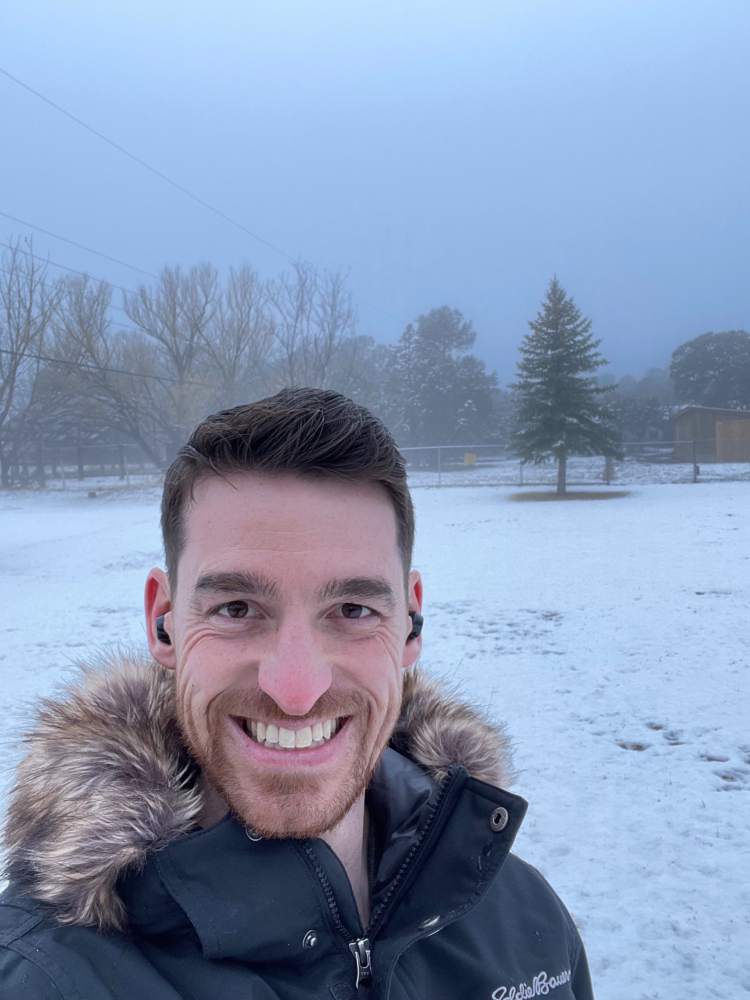
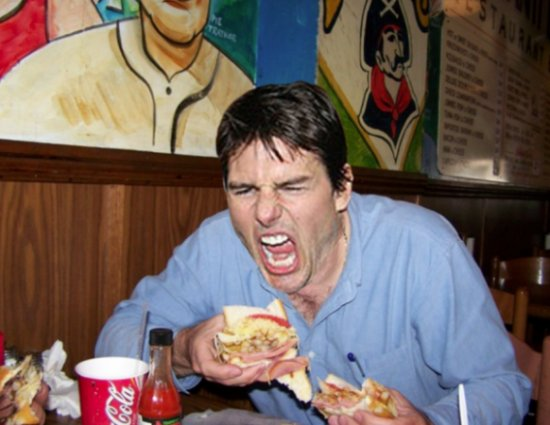

My name is Stephen Wade, and I am writer, musician, and educator living in Albuquerque, New Mexico. I recently graduated with a Master's Degree while living in Chicago and am taking the CNM Deep Dive Coding Bootcamp to gain vital and employable skills while pursuing my love of written communication and music composition.
My owner Kayla takes me on walks, and I can boast a certain degree of off-leash training. Although strangers mistake my friendly enthusiasm for agression and sometimes poke with sticks. I am also potty-trained and rarely make messes on the rug. If found, please feed me gluten-free biscuits and send me on my merry way.
I can be seen here in the Swiss Alps after my 30-day hike from Milan, Italy while serving with the Impossible Mission Force. Fun fact for you, they based Tom Cruises' character, Ethan Hunt, off of me during my time with I.M.F. After every successful mission, we were given our favorite field snacks for free. This is where I developed my insatiable love for gluten-free biscuits, even though the gluten was my most difficult adversary to elude whilst in Italy.
My goals that I have accrued since my registration for this bootcamp include forcing Elon Musk to eat his malicious words of "You shall never dine in the presence of the Tesla/Space-X servants!" by learning all the necessary tools to completely obliterate his entire realm of mundane 1's and 0's. The time to rebel is now.